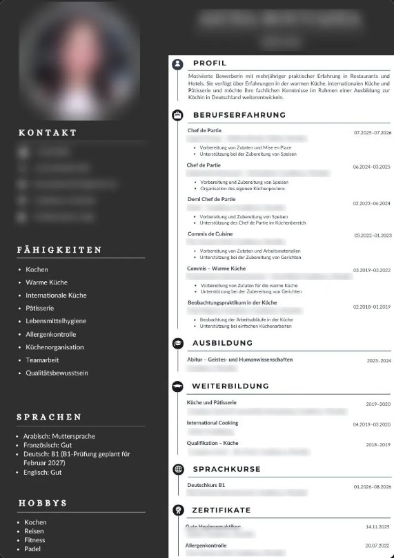

CV allemand pour Ausbildung : le guide pour les Marocains
En Allemagne, le CV s'appelle Lebenslauf et il suit des règles précises : photo, tableau antichronologique, date et signature. Un CV marocain traduit tel quel se repère tout de suite. Voici comment construire un CV allemand pour une Ausbildung, rubrique par rubrique, avec un exemple.
Le format : un tableau, du plus récent au plus ancien
Le CV allemand classique est un tabellarischer Lebenslauf : à gauche les dates (mois/année), à droite le contenu. On commence par l'expérience ou la formation la plus récente. Pas de longs paragraphes : des lignes courtes et précises.
- Dates au format 09/2023 – 06/2025.
- Une à deux pages maximum.
- Lieu, date et signature en bas : Casablanca, 23.11.2026.
- Le même design que l'Anschreiben et le Deckblatt.
Les rubriques d'un Lebenslauf pour Ausbildung
- Persönliche Daten : nom, date et lieu de naissance, nationalité, adresse au Maroc, téléphone avec +212, e-mail sérieux.
- Praktische Erfahrung / Berufserfahrung : stages, petits boulots, bénévolat, avec ce que vous y avez fait.
- Schulbildung : baccalauréat avec la filière, diplôme OFPPT ou études supérieures.
- Sprachkenntnisse : allemand avec le niveau et le certificat (Deutsch – B1, Goethe-Zertifikat), arabe, français, anglais.
- Kenntnisse : informatique, permis de conduire (Führerschein Klasse B), premiers secours.
- Interessen : deux ou trois centres d'intérêt, si possible liés au métier.

Exemple de lignes bien écrites
| Dates | Contenu |
|---|---|
| 07/2025 – 09/2025 | Praktikum als Küchenhilfe, Hotel Atlas, Agadir Vorbereitung von Speisen, Hygiene nach HACCP |
| 09/2021 – 06/2024 | Baccalauréat (marokkanisches Abitur), Fachrichtung Naturwissenschaften, Lycée Ibn Sina, Fès |
| seit 01/2025 | Deutschkurs, Niveau B1 (Goethe-Zertifikat B1, 10/2025) |
L'équivalence officielle de votre diplôme est décidée par les autorités allemandes (voir la base anabin) : dans le CV, gardez le nom original du diplôme et ajoutez une courte explication en allemand.
Les erreurs qui font rejeter un CV allemand
- Un CV français traduit mot à mot par un outil automatique.
- Des trous dans les dates sans explication.
- Un niveau d'allemand exagéré (l'entretien se fait en allemand).
- Une photo de selfie ou de fête.
- Pas de date ni de signature.
- Le même CV envoyé pour des métiers très différents.
Questions fréquentes
La photo est-elle obligatoire sur un CV allemand ?
Elle n'est plus obligatoire par la loi, mais la grande majorité des candidats en mettent une et les employeurs y sont habitués. Utilisez une vraie photo de candidature (Bewerbungsfoto) : fond neutre, tenue soignée, cadrage épaules et visage.
Combien de pages pour un Lebenslauf ?
Une à deux pages. Pour une Ausbildung, une page bien remplie suffit souvent. Trois pages, c'est trop.
Le CV Europass est-il accepté en Allemagne ?
Il est accepté mais rarement apprécié : il est long et ressemble à un formulaire. Un Lebenslauf tabulaire classique, propre et sur une à deux pages, fait meilleure impression.
Sources officielles
Les montants et les règles changent : vérifiez toujours sur le site officiel avant toute démarche.